| Date of first posting |
Model(s) |
Files |
Description |
Status |
| 19 January 2012 |
inmcm4 |
co2mass_Amon_inmHistorical_r1i1p1_185001-200512.nc
and probably related files
|
Numbers are unreasonably low. Probably the contributor has reported the mass of carbon
atoms in atmospheric CO2, rather than the total mass of atmospheric CO2 as specified in
the CMIP5 Data Description.
 |
Data files are still available. Multiply by the ratio of molar masses (mCO2 / mC) to
correct the units. |
| 24 January 2012 |
GISS-E2-H |
Files in between
thetao_Omon_GISS-E2-H_piControl_r1i1p1_140001-141912.nc and
thetao_Omon_GISS-E2-H_piControl_r1i1p1_241001-242912.nc
(and related files) are missing. |
In the piControl time series, files in between Years 1419 and 2410 are not present.
The two blocks of years that are present (1180-1419 and 2410-2649) represent
different control runs, even though the "r1i1p1" in the file names implies that
they come from the same model run (as specified in the CMIP5 Data Description). |
Data files are still available. |
| 24 January 2012 |
all(?) GISS |
zostoga_Omon_GISS-E2-R_historical_r4i1p3_*.nc
and probably other zostoga files from GISS
|

Each separate file in a sequence of times (* = 185001-187512, 187601-190012, ..., 200101-200512)
resets zostoga to its initial value, giving the composite time series an nonphysical sawtooth
shape.
|
These data files are being withdrawn by GISS. |
| 24 January 2012 |
ipsl_cm4, cnrm_cm3,ingv_echam4 |
sic_*.nc |
Sea ice concentration is given as a fraction, rather than percent (as specified in the CMIP5
Data Description). |
Data files are still available. Multiply by 100 to correct the units. |
| 26 January 2012 |
GISS-E2-H |
zos_Omon_GISS-E2-H_historical_r1i1p1_*.nc
where * = 185001-186912, 187001-188912, ..., 199001-200512 |
Sea level was calculated erroneously. |
These data files have been withdrawn by GISS. |
| 2 February 2012 |
MIROC ESM |
*_day_MIROC-ESM_rcp26_r1i1p1_*
*_day_MIROC-ESM_rcp60_r1i1p1_*
*_day_MIROC-ESM_rcp45_r1i1p1_*
*_day_MIROC-ESM_rcp85_r1i1p1_*
*_day_MIROC-ESM_esmHistorical_r1i1p1_*
*_day_MIROC-ESM_esmrcp85_r1i1p1_*
and related LUCID files
| For Variables ua, va, wap, ta, hur, hus and zg, data from lower pressure levels was incorrectly
mapped to the standard pressure levels, in effect
stretching the vertical coordinate. This also occurs for the Antarctic Plateau (black "missing data"
in the zonal mean plot) which erroneously extends up to 60000 Pa = 600 mb.
 |
MIROC is removing the erroneous files and replacing them with corrected files where
possible. |
| 8 February 2012 |
Several |
See table provided by Jonathan Gregory, Reading, UK. |
Many files contain correct data, but incorrect metadata regarding branch times from "parent" runs, e.g.
time in a pre-industrial control run (piControl) that was used to initialize an historical run.
The table provided by Jonathan Gregory, Reading, UK,
provides corrected information. |
Data files are still available. |
| 8 February 2012 |
CCSM4 |
zg_Amon_CCSM4_historical_r1i1p1_*.nc |
Data is missing above 600 hPa. |
CCSM consortium s removed the erroneous files and replaced them with corrected files
(23 March 2012). |
| 17 February 2012 |
IPSL-CM5A-LR
IPSL-CM5A-MR
IPSL-CM5B-LR | xxxx_Lmon_IPSL-CM*.nc
yyyy_3hr_IPSL-CM*.nc
where xxxx = mrro, mrros, evspsblsoi, evspsblveg, tran
and yyyy = mrro, mrros |
Fields noted at left were too low by a factor of 48. For example, the global annual mean mrro for 2005
is 2e-7 kg/m2/sec = 0.02 mm/day, whereas expected value is ~1 mm / day.
 |
IPSL has removed and replaced the erroneous files (new version numbers 20120430 and later). |
| 17 February 2012 |
IPSL-CM5A-LR |
ua_6hrPlev_IPSL-CM5A-LR_rcp85_r2i1p1_207601010300-208512312100.nc
and related va files |
Time-offset problem in older versions: e.g. file name implies that it contains years 2076-2085,
but metadata said years 2086-2095. |
IPSL has removed and replaced the erroneous files (new version numbers 20111119-20120114). |
| 22 February 2012 |
IPSL-CM5A-MR |
Cloud output from IPSL-CM5A-MR 1pctCO2, historical, and piControl runs; possibly from other experiments
with this model
| Clouds computed by the model for its climate simulations are inconsistent with clouds computed by
separate "cloud-observation simulator" modules within the model. For example, in the figure below
(provided by Mark Zelinka) the model is predicting a global mean cloudiness value of 58.40%, but it
is also saying that if the ISCCP satellites observed the model-simulated Earth, they would obtain a
global mean cloudiness value of only 44.87%. This discrepancy is too large to be explained by differences
between model and satellite definitions of cloudiness. The source of the discrepancy is probably an
error in the way this model implements the ISCCP cloud-observation simulator.
 |
Contacting IPSL. |
| 1 March 2012 |
EC-EARTH |
All ocean output, e.g. tos_Omon_EC-EARTH_*.nc |
Sea surface temperature lacked a seasonal cycle. For example, compare January 2005 (top) and July 2005 (bottom)
from the file tos_Omon_EC-EARTH_historical_r11i1p1_185001-200512.nc. The two maps are identical.
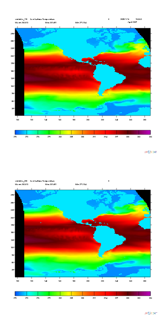 |
ICHEC removed the problematic files and reprocessed the data to correct the problem
(May 2012). |
| 20 March 2012 |
inmcm4 |
cl_Amon_inmcm4_historical_r1i1p1_200001-200512.nc
and related historical and RCP files for cl, clw, cli, hus;
analogous tnta, tntmp, tntr files for AMIP |
Cloudiness values often exceeded 100% (see nearby plot). Other problems were evident in the other fields
named at left.
 |
INM has published corrected files (27 January 2013). |
| 24 March 2012 |
MIROC-ESM |
All files containing chl, talk, or spco2 |
Units are different from the ones specified in the CMIP5 Data Description. The
table provided by Michio Kawamiya, JAMSTEC, Japan,
provides conversion factors. |
The MIROC group is replacing the affected files. Meanwhile, use the conversion factors in the
table. |
| 25 March 2012 |
FGOALS-g2 |
ua_6hrPlev_FGOALS-g2*.nc
va_6hrPlev_FGOALS-g2*.nc
ta_6hrPlev_FGOALS-g2*.nc
rlut_Amon_FGOALS-g2*.nc
rlutcs_Amon_FGOALS-g2_*.nc
pr_*_FGOALS-g2_*.nc
prc_*_FGOALS-g2_*.nc |
The 6 hourly ua, va and ta were incorrectly interpolated in the vertical layers, and the monthly rlut and rlutcs actually represented the corresponding outgoing longwave at the top of model not the top of atmosphere. For variables pr and prc, the snow was added twice. |
Lijuan Li et al. (LASG, Beijing, China) have removed the incorrect files and uploaded replacements
(7 March 2012). |
| 26 March 2012 |
CCSM4
CESM1-CAM5
CSIRO mk3.6
IPSL cm5a
MPI-ESM-LR
MPI-ESM-P
MIROC-ESM
MIROC-ESM-CHEM |
All clwvi files from the models listed at left |
Per Jonathan Jiang et al. (JPL, Pasadena, CA), Jonannes Karlsson (Stockholm University) and
Daniel McCoy (University of Washington):
clwvi from these models is for liquid water only, rather than ice+liquid
(as specified in the CMIP5 Data Description). A simple diagnostic indicating this problem is
a difference map of clwvi - clvi. Since clvi is the ice water path, clwvi - clvi should be the
liquid water path, but it will be negative in some regions if clwvi is
for liquid water only. See nearby plot.
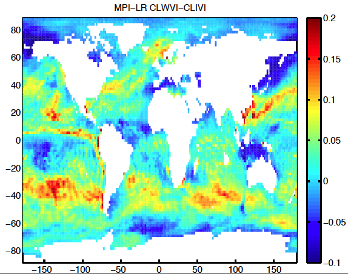 |
Data files are still available. The MIROC group plans to replace their problematic ESM and ESM-CHEM data files
(MIROC4h and MIROC5 data files are correct). |
| 26 March 2012 |
IPSL-CM5A-LR |
All tasmax and tasmin files |
Subtracting tasmin from tasmax gives a monthly mean diurnal cycle that is unphysically large. See nearby plot, which shows
results from the final time-point of the r1i1p1. Values approach 50 K in the Arctic even though at this time of year the
Arctic experiences perpetual night.
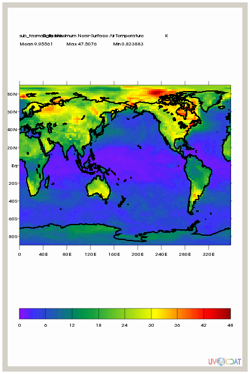 |
Data files are still available. Per Jenny Lindvall (Stockholm University, Sweden): approximately correct values
can be reconstructed from the 3-hourly data. |
| 30 March 2012 |
NorESM1-M |
All evspsbl files |
Values were exactly 1000 times too large due to an error in units conversion during post-processing.
See nearby plot: the global- and annual-mean value is about 0.03. If units were
kg m-2 s-1 (as stated in the metadata) then conversion to more common units would give about 3 meters per day, 1000
times too large.
 |
NorESM1-M corrected the data files (June 2012). |
| 30 March 2012 |
GISS-E2-R |
Files covering certain times are missing (see remarks in adjacent column). |
In the piControl time series, files in between Years 3631 and 3980 are not present.
The two blocks of years that are present (3331-3630 and 3981-4530) represent
different control runs, even though the "r1i1p1" in the file names implies that
they come from the same model run (as specified in the CMIP5 Data Description). |
Data files are still available. |
| 31 March 2012 |
FGOALS-s2 |
ta_6hrLev_FGOALS-s2_*.nc
ta_6hrPlev_FGOALS-s2_*.nc |
6-hourly air temperature between 85°S and 85°N output by FGOALS-s2, except for aqua-planet experiments, has
virtually no annual cycle (see figure provided by Haiyang Yu,
LASG, Beijing). |
Data files have been withdrawn; corrected files will be provided. |
| 9 April 2012 |
MPI-ESM-LR |
ta_cfSites_MPI-ESM-LR_*.nc |
Values are much too low.
See nearby plot: the surface values at Site 30 (in the tropics) are all less than 271 K -- below freezing.
 |
Contacting MPI. |
| 11 April 2012 |
GISS-E2-H
GISS-E2-R |
All cli and clw files contributed before March 2011 |
Vertical coordinates were reversed in versions contributed before March 2011. |
Erroneous data files have been replaced. |
| 11 April 2012 |
CNRM-CM5 |
All files known to the CNRM group to be problematic |
Stéphane Sénési of CNRM, Toulouse, maintains a webpage
listing "known issues" and related model documentation. |
CNRM webpages are updated periodically. |
| 11 April 2012 |
MPI-ESM-LR |
SST input to AMIP future run |
A discontinuity of temperature appears at the land-sea interface (see nearby plot).
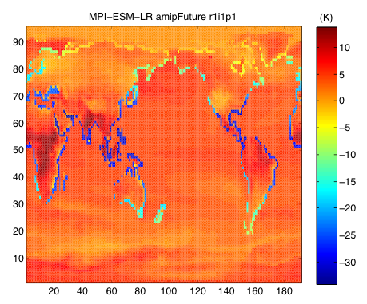 |
MPI is deleting the current AMIP future run and re-running the experiment. |
| 11 April 2012 |
inmcm4 |
Files in the dataset cmip5.inmcm4.historical.r1i1p1.mo.so.ver-1 and analogous datasets |
The ocean depth field contained in this dataset can appear offset from the land-sea mask (see nearby plot provided by Thomas Martin, GEOMAR,
Kiel).
 |
Data remain available. Users should note that ocean data are represented on the model's native grid.
Geographical coordinates of each gridpoint can be seen in coordinates (lat, lon) -- not (rlat, rlon). |
| 11 April 2012 |
GFDL-CM3
GFDL-ESM2M |
Files from the following datasets:
cmip5.output1.NOAA-GFDL.GFDL-ESM2M.piControl.mon.land.Lmon.r1i1p1
cmip5.output1.NOAA-GFDL.GFDL-CM3.piControl.day.atmos.day.r1i1p1 |
Many time points were missing from these datasets. |
GFDL is replacing the datasets with new versions containing all time points. |
| 12 April 2012 |
MPI-ESM-LR |
chl_Omon_MPI-ESM-LR_historical_r1i1p1_185001-200512.nc
and other chl files |
Although the metadata says units are kg m-3 (as specified in the CMIP5 Data Description) the actual
units are mg m-3. |
The MPI group is replacing the affected files. Meanwhile the original data files are still available;
divide by 106 to convert units to kg m-3. |
| 12 April 2012 |
GFDL-CM3 |
so_Omon_GFDL-CM3_historical_r1i1p1_197501-197912.nc |
This file is missing from the sequence of historical r1i1p1 salinity output. |
GFDL is adding the file to the sequence (13 April). |
| 13 April 2012 |
MIROC-ESM-CHEM
MIROC4h
MIROC5 |
All files known to the MIROC group to be problematic |
The MIROC group maintains a website
for their CMIP5 contribution, including a link to "Known Issues in our CMIP5 data." |
The MIROC CMIP5 website is updated periodically. |
| 10 May 2012 |
MIROC |
All clt files |
MIROC "total cloudiness" doesn't include cloud with tau smaller than 0.3,
rather than including the whole atmospheric column as specified in the CMIP5 Data Description. |
Data files are still available. |
| 12 May 2012 |
FGOALS-s2 |
evspsbl_Amon_FGOALS-s2_historical_r1i1p1_185001-200512.nc
evspsbl_Amon_FGOALS-s2_rcp85_r1i1p1_200601-210012.nc
and probably other FGOALS-s2 evspsbl files |
Sign convention was reversed from that of the CMIP5 Data description: upward flux of water vapor was negative;
downward flux is positive. See nearby plot provided by Jack Scheff, University of Washington.
 |
Qing Bao et al. (LASG, Beijing, China) have removed the incorrect files and uploaded replacements
(16 May 2012). |
| 23 May 2012 |
MIROC |
All mc files |
MIROC "convective mass flux" is actually cloud base convective mass flux. |
Data files are still available. |
| 1 June 2012 |
ACCESS1.0
ACCESS1.3 |
All files known to the ACCESS group to be problematic |
Peter Uhe of CSIRO Marine and Atmospheric Research, Australia, maintains a
webpage
listing "known issues" and related model documentation. |
ACCESS webpages are updated periodically. |
| 1 June 2012 |
CMCC-CM
EC-EARTH |
evspsbl files |
Sign convention is reversed from that of the CMIP5 Data description: upward flux of water vapor is negative;
downward flux is positive. See nearby plot provided by Jack Scheff, University of Washington.
 |
Contacting modelers. Data files are still available. EC-EARTH files are being corrected. |
| 12 July 2012 |
MRI-CGCM3 |
All albisccp and pctisccp files |
Per Seiji Yukimoto, MRI, Tsukuba: the time averaging for albisccp and pctisccp has been done according
to 5.A.2 of ISCCP simulator documentation, as indicated in
the CMIP5 standard output specification, except that originally the last procedure
avg(meanalbedocld) = avg(gridbox_meanalbedocld)/avg(totalcldarea)
was not applied. The original data corresponded to
avg(gridbox_meanalbedocld). Correct values may be obtained by the following transformations:
albisccp -> albisccp/cltisccp*100.0
pctisccp -> pctisccp/cltisccp*100.0
(All the three variables have been averaged on sunlit points only,
so this correction works consistently.) |
Erroneous data files have been replaced (July 2012). |
| 13 July 2012 |
MRI-CGCM3 |
All files for amip4xCO2 |
Per Seiji Yukimoto, MRI, Tsukuba:
The CO2 concentration in amip4xCO2 was not set to 4xCO2 but to 1xCO2 in years 1979-2005,
and to zero in years after 2006. |
Erroneous data files have been replaced (January 2013). |
| 13 July 2012 |
MRI-ESM1 |
Files: All files for esmrcp85 |
Per Seiji Yukimoto, MRI, Tsukuba:
The emission data of carbon monoxide (CO), nitrogen oxide (NOx), and volatile organic compounds
(VOCs) was mistakenly (10-year advance) forced by the year 2089, and these emissions were set to
zero after the year 2090. The global mean ozone concentration in the troposphere abruptly decreases
by 10-30% after the year 2090. Since there are little impact of this error on the stratospheric ozone
(about 90% of the atmospheric ozone is contained in the stratosphere), the global mean total column
ozone is affected within 1% to 3%.
| A corrected simulation is now running. The data will be replaced by the end of July, 2012. |
| 15 July 2012 |
CESM1-CAM5 |
RCP8.5 output |
A discontinuity appeared in the last five years of the simulations.
See nearby plot provided by Geert Jan van Oldenborgh, KNMI, the Netherlands.
 |
Data was corrected and republished (June 2012). |
| 17 July 2012 |
EC-EARTH |
RCP8.5 output |
Year 2082 is missing from Run 14 of the ensemble.
| Contacting the EC-EARTH group. |
| 19 July 2012 |
CanESM2
CanCM4
CanAM4 |
All concoa, concbc, concso4, concso2, concdms, concss and concdust output |
Per Slava Kharin Viatcheslav, CCCma, Victoria: A mistake when conveting from mixing ratios to mass
concentrations rendered these fields invalid.
| This output is removed; there are no immediate plans to re-compute it. |
| 19 July 2012 |
MIROC-ESM
MIROC-ESM-CHEM |
sftlf and sftgif files (from CMOR Table fx) |
These fractions are given as numbers between 0 and 1, rather than percent (as specified in the CMIP5
Data Description). See nearby plot provided by Jack Scheff, University of Washington.
 |
The MIROC group will correct the error (20 July 2012). Meanwhile, the original data files are still available;
multiply by 100 to correct the units. |
| 20 July 2012 |
FGOALS-s2 |
hfds files (from CMOR Table Omon) |
Downward heat flux into the ocean surface had unrealistically small values due to incorrect units.
See nearby plot provided by Mahe Perrette, Potsdam Institute for Climate Impact Research.
 |
The FGOALS group corrected the error (26 July 2012). |
| 20 July 2012 |
CESM1-CAM5-1-FV2 |
rlut_Amon_CESM1-CAM5-1-FV2_*_r1i1p1_200601-209912.nc |
Per Balwinder Singh, PNNL: There was an error in data submitted to CMIP5 in the top of atmosphere fluxes for many of the variants of CCSM and CESM model simulations (CESM1-CAM5-1-FV2, CESM1-CAM5 and CCSM4) that can lead to the conclusion that the model does not conserve energy. The model does in fact conserve energy precisely -- the error arises because we produced an inconsistent characterization of top of atmosphere energy fluxes based upon a mixture of "top of model" and "top of atmosphere" fluxes in our early submissions to CMIP5. The field is being corrected for all runs, to eliminate the problem, but we are aware that some users have downloaded the data and corrupt versions are floating around of this field. If you care about the Top Of Atmosphere (TOA) energy budget it is important to get the corrected datasets.
You can tell whether you have a corrupted dataset by examining metadata for the "rlut" field. If the field contains the following metadata:
"rlut:comment = "FSNTOA-FSNT+FLNT, CMIP5_table_comment: at the top of The atmosphere (to be compared with satellite measurements)"
it is correct. Otherwise "rlut" is corrupt and you should download a new copy of that data.
|
Corrected fields will be published by LLNL and NERSC. |
| 20 July 2012 |
CESM1-CAM5-1-FV2 |
mrso_Lmon_CESM1-CAM5-1-FV2_*_r1i1p1_200601-209912.nc |
Per Balwinder Singh, PNNL: Variable msro in Lmon was computed incorrectly for many of the variants of CCSM and CESM model simulations (CESM1-CAM5-1-FV2, CESM1-CAM5 and CCSM4). For CESM1-CAM5-1-FV2, you can tell whether you have a corrupted dataset by examining metadata for the "mrso" field. If the "mrso:history" field shows that the data is processed on or after July 2012 then it is correct. Otherwise "msro" is corrupt and you should download a new copy of that data.
For other variants of CCSM and CESM (CESM1-CAM5 and CCSM4), the data is being processed by NCAR.
|
Corrected fields will be published by LLNL and NERSC. |
| 20 August 2012 |
CESM1-CAM5-1-FV2 |
All variables in the RCP8.5 and RCP4.5 scenarios |
Per Balwinder Singh, PNNL: Both RCP8.5 and RCP4.5 experiments are corrupted. You can tell whether you have a corrupted dataset by examining metadata for these cases. If the version designation of the variables in these cases contains:
Version: 20120605
then they are corrupted.
|
PNNL is re-running the RCP4.5 and RCP8.5 cases. The data will be published by NERSC and LLNL as soon as the data are ready. |
| 21 August 2012 |
HadGEM2-ES |
Pre-industrial control run and RCP8.5 scenario output |
Several file pairs overlap in time e.g.:
tas_Amon_HadGEM2-ES_piControl_r1i1p1_208412-209910.nc
tas_Amon_HadGEM2-ES_piControl_r1i1p1_209812-212311.nc
evspsbl_Amon_HadGEM2-ES_rcp85_r1i1p1_208012-209912.nc
evspsbl_Amon_HadGEM2-ES_rcp85_r1i1p1_209912-212411.nc
|
The HadGEM2-ES group will correct the overlap (30 July 2012). Meanwhile, data files are still available. |
| 21 August 2012 |
CCSM4 |
All clisccp files |
Per Mark Zelinka, PCMDI: The dimensions of clisccp are described in the netcdf file as (time, tau, plev, lat, lon), but dimensions 2 and 3 have been reversed, making the true dimensions (time, plev, tau, lat, lon). The nearby figure demonstrates this: Summing clisccp only over "tau" bins 1 and 2 produces a map (top left) that is clearly the distribution of low clouds (i.e., the sum over plev bins 1 and 2). Similarly, summing the histogram only over "tau" bins 6 and 7 produces a map (top right) that is clearly the distribution of high clouds (i.e., the sum over plev bins 6 and 7).
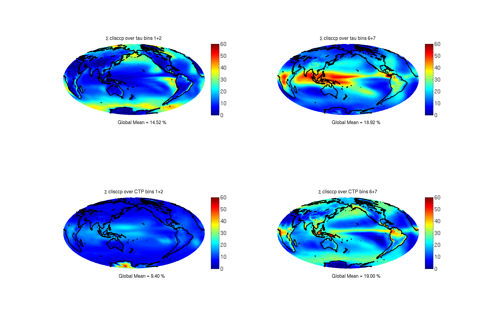 |
Data are being corrected and will be replaced. |
| 24 September 2012 |
CCSM4
CESM1 |
All files known to the CCSM / CESM consortium to be problematic |
Gary Strand of NCAR maintains a
webpage
listing errata information. |
This webpage is updated periodically. |
| 24 September 2012 |
NICAM.09 |
All files for the aqua4xCO2 experiment |
Configuration of the aquaplanet 4xCO2 run (6.7b) by NICAM.09 did
not follow CMIP5 protocol. The SST (sea surface temperature) boundary condition
condition should have been the same as the aquaControl run (6.7a), but SST was prescribed
to be 4K warmer than the control run by mistake. |
The NICAM team has now re-run the aqua4xCO2 run and corrected the data (16 October 2012). |
| 22 October 2012 |
INMCM4 |
Daily-mean hur output from RCP4.5 and RCP8.5 experiments |
Relative humidity includes unphysical values such as negative numbers.
See nearby plot.
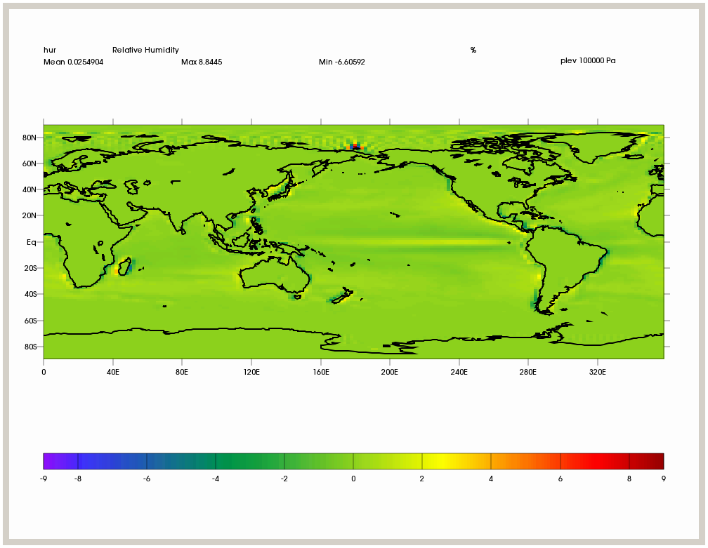 |
INM will provide corrected data. |
| 23 October 2012 |
FGOALS-g2 |
All historical runs
| The historical run that provided the starting point for RCP experiments was not included in the original FGOALS-g2
contribution to CMIP5. At the end of May 2012, the FGOALS group added output from this run, designating its version
number as "r1i1p1." Since previous version numbers included "r1i1p1," all historical run version numbers were
changed at this time as described in the
table provided by Lijuan Li (LASG, Beijing, China). |
Data prior to 1900 is missing in version "r2i1p1" (formerly called "r1i1p1"). |
| 23 October 2012 |
NICAM.09 |
All |
Description: CO2 concentrations of the NICAM.09 runs are 348ppmv for
aquaControl and aqua4K and 1392ppmv for aqua4xCO2. These concentrations
are different from those in CMIP5 experimental design (e.g. AMIP mean
concentration for aquaControl). |
Data files are still available. |
| 24 October 2012 |
HadGEM |
Ocean / seaice output |
In the metadata, latitude bounds near the poles exceed 90 degrees in magnitude.
For example tos_Omon_HadGEM2-CC_historical_r3i1p1_200112-200512.nc has lat_bnds = (-90.5, -89.5),
(-89.5, -88.5), ... |
Contacting HadGEM group. Meanwhile, data files are still available. |
| 15 November 2012 |
CMCC-CM |
rtmt_Amon_CMCC-CM_1pctCO2_r1i1p1_187101-188012.nc and other output from the 1pctCO2
scenario |
rtmt values are much too large (over 600 W/m2). |
The CMCC-CM group is investigating and will correct the problem.
Meanwhile, data files are still available. |
| 15 November 2012 |
CanESM2 and CanAM4 |
All COSP variables: cltisccp, albisccp, pctisccp, clisccp, cltcalipso, cllcalipso, clmcalipso,
clhcalipso, clcalipso, parasolRefl, clcalipso2, cfadDbze94, cfadLidarsr532 |
An error was made when incorporating COSP into CanESM2 and
CanAM4 which resulted in COSP simulators being provided with profiles of
pressure at layer interfaces that are shifted downward by one level.
This mainly affected the interpolation of CALIPSO and CloudSat output to
the prescribed vertical heights (see nearby figure from Jason Cole, CCCma) and the PARASOL
reflectances. The incorrect layer interface pressures also caused a
small change in some ISCCP variables related to the determination of
cloud top pressure.
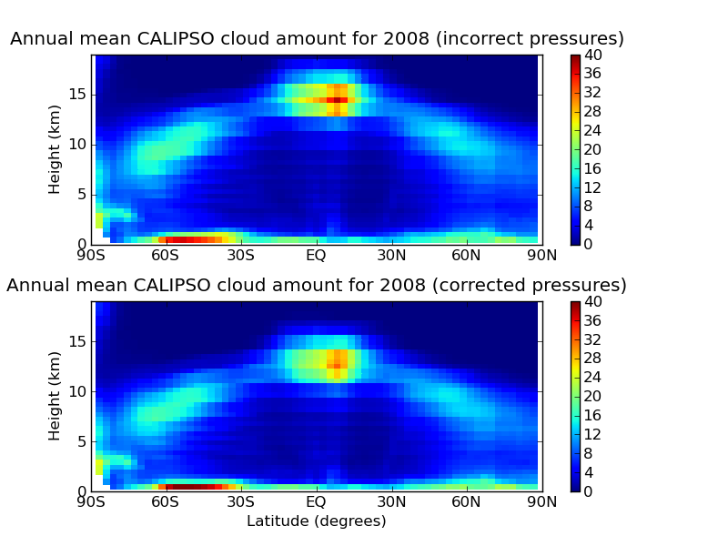 |
CCCma removed the erroneous files on 1 Nov 2012 and replaced
them with corrected files on 19 January 2013, after rerunning the model simulations. |
| 4 December 2012 |
FGOALS-g2 |
Historical daily and monthly mean output from r1i1p1 |
Daily means and monthly means were not consistent for the r1i1p1 ensemble member
(but were consistent for r3i1p1). |
The FGOALS has fixed the problem for r1i1p1 and re-published the data (28 January 2013). |
| 28 January 2013 |
BNU-ESM |
sic from historical and piControl scenarios |
From examining the locations of "missing data" (i.e. land areas)
in historical output, it appears that the longitude
coordinate is erroneously shifted by 90 degrees. See nearby figure from Geert Jan van Oldenborgh,
KNMI. sic in the piControl scenario has a similar problem.
 |
BNU is addressing the problem. Meanwhile, data files are still available. Users may be able to fix the problem
in the historical scenario by adding 90 degrees
to the longitude coordinate. |
| 28 January 2013 |
FGOALS-g2 |
all output from the historical and historicalNat scenarios |
Volcanic forcing is missing from these scenarios. |
The FGOALS group is re-running these scenarios with volcanic forcing.
Meanwhile, the original data files are still available.
When the new runs (including volcanic forcing) are done they will enter the CMIP5 database
labeled "historical" and "historicalNat"; at the same time the original data files will be
re-labeled "historicalMisc" with different p-values in the "rip" designation. |
| 27 February 2013 |
INMCM4 |
va_6hrPlev_inmcm4_rcp45_*.nc
ua_6hrPlev_inmcm4_rcp45_*.nc
ua_6hrPlev_inmcm4_rcp85_*.nc
va_6hrPlev_inmcm4_rcp85_*.nc
|
Winds at 250 hPa are too large by a factor of exactly 100 (winds at 500 and 850 hPa are correct). |
Divide by 100 to get correct 250 hPa winds. |
| 3 October 2013 |
FGOALS-s2 |
all output from the historical and RCP scenarios |
missing |
Withdrawn by the FGOALS group in early 2013.
|
| 4 October 2013 |
CSIRO Mk3-6-0 |
all ocean-surface temperature (tos) output |
Ocean-surface temperature is undefined (flagged as "missing data") under sea ice.
See nearby figure from Geert Jan van Oldenborgh, KNMI.
According to the CMIP5 Data Description, tos should be defined as the ocean's temperature just under the sea ice
where sea ice exists.
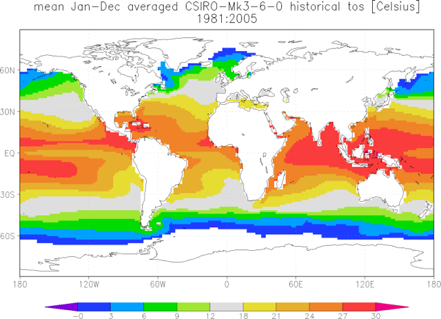 |
Data files are still available. Users can approximately fix the problem by setting tos = -2 degrees C under sea ice.
|
| 7 October 2013 |
CMCC-CM
CMCC-CMS
CMCC-CESM |
all 3D atmospheric output on model levels |
Vertical coordinate is "alternate_hybrid_sigma," but metadata incorrectly states that
vertical coordinate is "standard_hybrid_sigma."
This error affects the NetCDF attributes only, not the data. |
Data files are still available. To get around the problem, use the correct formula "p = ap + b*ps"
instead of "p = a*p0 + b*ps." |
| 7 October 2013 |
HadGEM2-A |
*aquaControl*
*aqua4xCO2*
*aqua4K* |
The concentrations of CO2, CH4, N2O, and O3 were specified in error as ppmv when the models required
mass mixing ratios. Hence the CO2 concentration is approximately 30% too low. |
Data files are still available. |
| 7 October 2013 |
INMCM |
all historical output |
All forcings were erroneously shifted one year earlier than actual time, so that the time-coordinate units should
read "days after 1851" rather than 1850. This shift is most apparent in a plot of anomalous upwelling clear-sky
shortwave radiation at the top of atmosphere (rsutcs) for the period covering the El Chichon and Pinatubo eruptions.
See nearby figure from Mark Zelinka, PCMDI. In INMCM4 the reflectance peaks due to these two volcanoes appear a year earlier
than the actual eruption times (which appear correctly in the two other models shown).
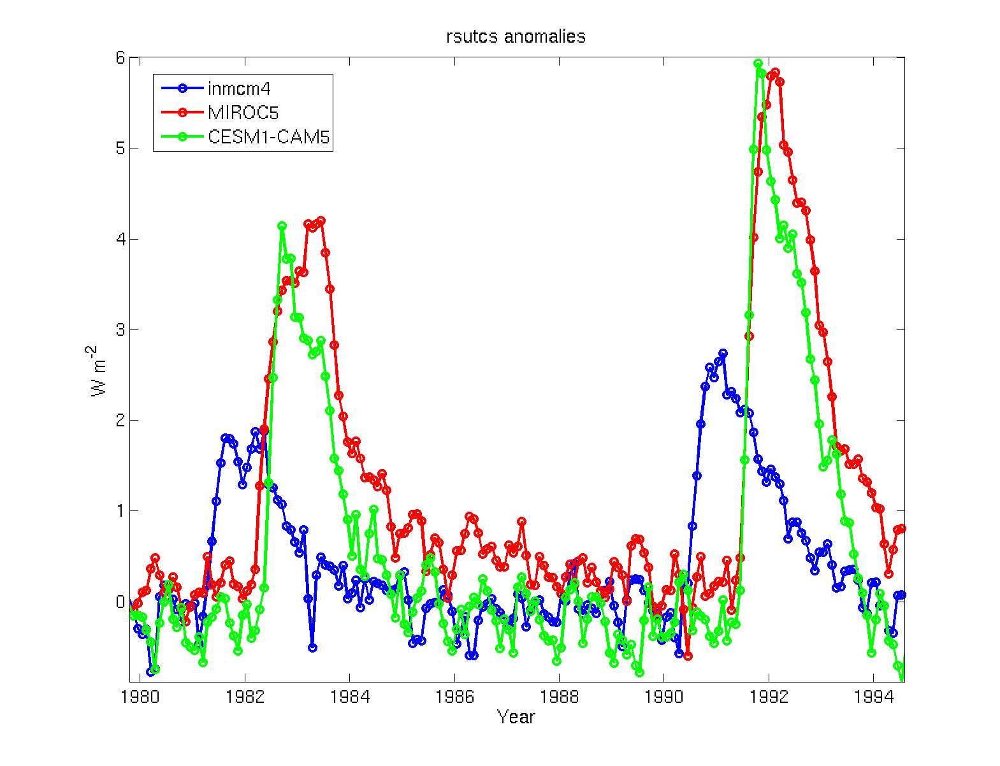 |
Data files are still available. Users can fix the problem by manually correcting the time coordinate or just adding
1 to the year.
|
| 8 October 2013 |
MIROC-ESM |
hfds output (net surface heat flux into ocean) |
Global annual mean of this flux is about an order of magnitude too large in absolute value.
See nearby figure, which maps hfds for July 1991. It shows reasonable patterns for this season but a global mean
that's way too big (-68 W / m2 noted at upper left).
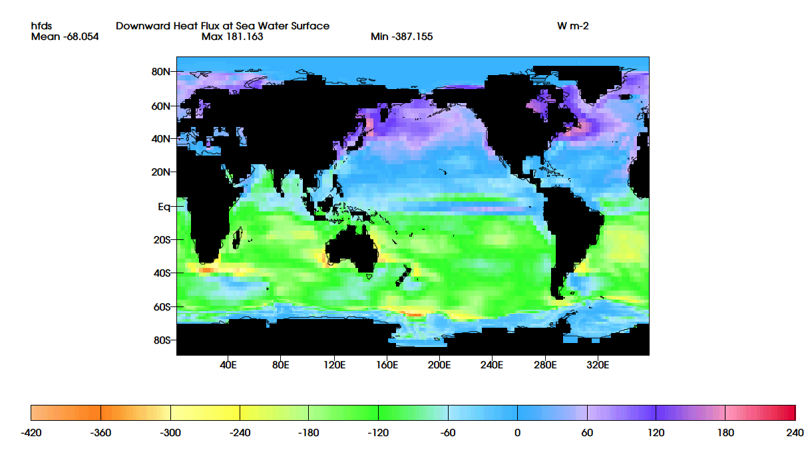
The MIROC group has traced this problem to double-counting of shortwave penetration.
This is why hdfs is incorrect in the summer hemisphere although other variables, such as SST, are reasonable. |
Data files are still available.
To manually correct this error, try hfds = hfds_you_have * 0.95 + rsntds * 0.337938687
where rsntds is Net Downward Shortwave Radiation at Sea Water Surface [W / m2].
|
| 9 October 2013 |
CNRM-CM5
IPSL-CM5A-LR |
*6hrLev*historical*r1i1p1* |
Data that is present in the 6hrLev files is not consistent with data in the other formats, e.g. 6hrPlev,
even when allowance is made for the differing vertical coordinates. |
Data files are still available. Isla Simpson of Columbia University has contacted both the CNRM-CM5 and
IPSL-CM5A-LR groups. The IPSL
group confirmed that surface pressure is wrong in their 6hrLev files from 1996-1999 for hus, ta, ua and va;
the correct surface pressure is provided in their separate PS file. |
| 9 October 2013 |
CESM1-CAM5 |
*amipFuture* |
Sea-surface temperature (SST) from the amipFuture scenario is identical to SST from the amip scenario.
These two scenarios are supposed to have SST differing by preset amount. It is possible that the amipFuture
runs were erroneously done without applying the SST difference. |
The CESM1-CAM5 group is investigating the situation. Meanwhile, data files are still available.
|
| 10 March 2014 |
MRI-CGCM3
MRI-ESM1 |
cldnci_aero_*.nc |
The values are mistakenly weighted by liquid cloud top fraction
instead of ice cloud top fraction when computing monthly mean. |
Data files are being withdrawn.
|
| 10 March 2014 |
MRI-CGCM3 |
*4co2_cfMon_MRI-CGCM3_piControl_*.nc
*4co2_cfMon_MRI-CGCM3_amip_*.nc
*4co2_cfMon_MRI-CGCM3_sstClim_*.nc
*4co2_cfMon_MRI-CGCM3_aquaControl_*.nc |
The same results as the corresponding 4xCO2 experiments (i.e.,
abrupt4xCO2, amip4xCO2, sstClim4xCO2, and aqua4xCO2) are stored in
these variables due to the misunderstanding of their definitions.
instead of ice cloud top fraction when computing monthly mean. |
Data files are being withdrawn.
|
| 10 March 2014 |
MRI-CGCM3 |
tntscpbl_*.nc
tnhusscpbl_*.nc
tnhusd_*.nc |
For temperature: tntscpbl (Cloud/BL) = dT/dt by Cloud scheme + dT/dt by BL scheme.
For specific humidity: tnhusscpbl (Cloud/BL) = dqv/dt by Cloud scheme,
but tnhusd (Diffusion) = dqv/dt by BL scheme.
('Diffusion' is mistakenly considered as vertical diffusion.) |
Data files are still available.
|
| 12 March 2014 |
ACCESS1-3 |
pr_day_ACCESS1-3_historical_r3i1p1_19750101-19991231.nc |
The time period 9-17 May 1990 (8 days) has zero precipitation. See nearby figure, which shows the meridional mean for 1990.
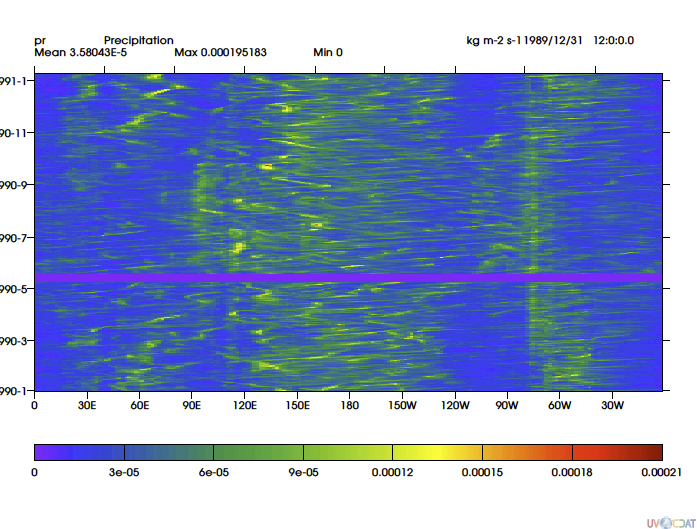 |
Contacting ACCESS group. Meanwhile, data files are still available.
|
| 17 March 2014 |
HadGEM2-CC |
psl_6hrPlev_HadGEM2-CC_rcp85_r1i1p1_20[n]010106-20[n+1]010100.nc
where n = 12, 26, 45, 50, 68, 85 and 95 |
The 7 files named at left each have one duplicated time point for a total of 1441 time points each
(should be 360 * 4 = 1440 since each file contains one year of data, and this model has a 360-day
calendar). |
Data files are still available. According to Michael Wehner (LBNL and UC Berkeley) the duplicate time slice
occurs at position 1319 (out of 1440) in each of the problematic files, so can be easily excised or skipped over.
|
| 19 March 2014 |
Had*
(all Met Office / Hadley Centre models) |
tsl*.nc
mrlsl*.nc |
The depths bounds are wrong. The meta-data has:
depth = 0.05, 0.225, 0.675, 2 ;
depth_bnds =
0, 0.1,
0.1, 0.35,
0.35, 0.675,
0.675, 3 ;
but it should be:
depth = 0.05, 0.225, 0.675, 2 ;
depth_bnds =
0, 0.1,
0.1, 0.35,
0.35, 1.0,
1.0, 3 ;
|
Data files are still available. The two incorrect bound values shown at left can be manually corrected.
|
| 19 March 2014 |
INMCM4 |
*_3hr_inmcm4_historical_r1i1p1_1998010100-1998123121.nc
where * = huss, ps, uas and vas
but not tas, hfls, or hfss |
The files specified at left have all zeros instead of data in their first time step (0Z on 1 Jan 1998).
this only applies to the very first 3-hour time step of the year.
By the second time step (3Z that day) everything looks normal again, and thereafter.
See nearby plots provided by Jack Scheff, University of Washington.
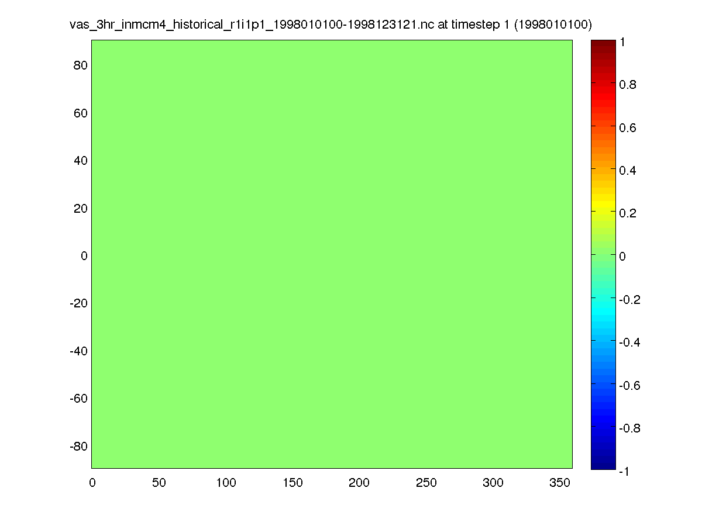
 |
Contacting INM. Data files are still available. |
| 19 March 2014 |
MIROC-ESM-CHEM
MIROC-ESM
MIROC4h
MIROC5 |
transix*
transiy* |
Sea ice mass transport values are too small in magnitude (by a factor of about 107) and have
incorrect sign.
Separately, in case of ESM*, snow mass transport is not included in the present data.
For details see the link to "Known Issues in our CMIP5 data" on the
MIROC website. |
Data files are still available.
To manually correct the magnitude and sign errors, multiply values by the grid cell sizes and reverse the sign. |
| June 2014 |
MIROC5 |
All files of 20C, RCP2.6, RCP4.5, RCP8.5, and AMIP experiments |
In this model, sulphate aerosol is formed by SO2 oxidization process using
OH radical, O3, and H2O2 (Takemura et al. 2005: J. Geophys. Res., 110,
D02202, Takemura et al. 2009: Atmos. Chem. Phys., 9, 30613073).
However, in historical, RCPs, and AMIP experiments by MIROC5, external
data of OH-radical were not read incidentally. This error results in
sulphate aerosol underestimated in these experiments. Fortunately, the
difference in historical and RCP 4.5 warming between the original
and bug-fixed version was small. See nearby plot provided by Tokuta Yokohata,
NIES/CGER.
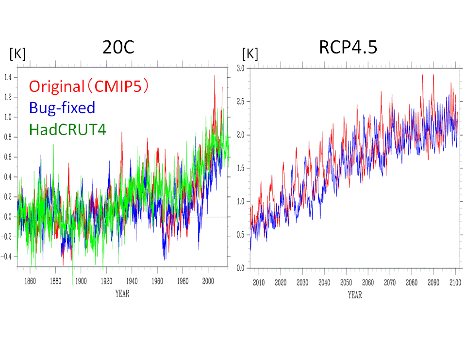
|
Original data files are still available. |
| 30 October 2014 |
BNU-ESM
CCSM4
CNRM-CM5
|
pr_3hr_*
and other 3-hourly flux files (rsds, rsdscs, ...)
NOTE: "cf3hr" files have different time coordinates than "3hr" files. This posting refers only to "3hr" files. |
Time coordinates are different from the ones specified in the CMIP5 Data Description.
For precipitation and other 3-hourly flux fields the specifications require averaging over intervals 0-3Z, 3-6Z, 6-9Z,
..., 21-24Z, which implies time labels 1:30Z, 4:30Z, 7:30Z, ..., 22:30Z. But the three models listed at left give time labels
0Z, 3Z, 6Z, ..., 21Z. For some models, the times recorded in the metadata may be erroneous. |
For CNRM-CM5, the time recorded for accumulated / averaged flux fields can be corrected by manually subtracting 1.5h. |
| 31 October 2014 |
CSIRO-Mk3-6-0 |
wmo_Omon_CSIRO-Mk3-6-0_historical_r1i1p1_*.nc
wmo_Omon_CSIRO-Mk3-6-0_rcp85_r1i1p1_*.nc
and possibly other wmo files |
Ocean mass transport values are far too small in magnitude, implying nonstandard units (see nearby plot).
 |
Contacting CSIRO. Data files are still available. |
| 31 October 2014 |
BNU-ESM |
pr_3hr_BNU-ESM_*.nc
| Units of 3-hourly precipitation are m s-1, not kg m-2 s-1
as stated in the metadata (and as specified in the CMIP5 Data Description). |
Data files are still available. Multiply by 1000 to convert units to kg m-2 s-1. |
| 24 November 2014 |
MRI-CGCM3 |
All amip r1i1p1 outputs for amip4xCO2/amip4K/amipFuture experiments
| The model settings of the amip run were not completely the same as
those of the amip4xCO2/amip4K/amipFuture experiments; a parameter for
volcanic sulfate aerosols in the aerosol model was different.
We therefore provide a new amip ensemble (r4i1p2) with the same
parameter value for the comparison with the amip4xCO2/amip4K/amipFuture
experiments. |
New data files have been published (21 August 2014). |
| 25 November 2014 |
MIROC5 |
*tntscpbl* |
Doesn't include contribution from 1) Boundary Layer Mixing, and part of
2) Stratiform Cloud and Precipitation, both of which should be included in tntscpbl.
This is why tntmp doesn't equal tntr + tntc + tntscpbl. |
Data files are still available.
The correct value for tntscpbl can be found by subtracting tntr and tntc from tntmp.
|
| 8 December 2014 |
CMCC-CM |
*clwvi* |
This field was "liquid water path," instead of "condensed water path" as it should
have been. |
The error has been fixed and the correct data have been published on
http://adm07.cmcc.it. |
| 8 December 2014 |
MPI-ESM |
*npp* (Net Primary Productivity
*ra* (Autotrophic Respiration) |
Published values of npp are "potential" (i.e. they do not account for structural limits to productivity
like density of forests) rather than the actual npp values the model finally computes. Since published
ra values were determined from published npp and Gross Primary Productivity, the error in npp has been
carried over to ra as well.
As shown in the nearby plots from Christian Reick of MPI, these errors can exceed 10% in future scenarios
that include high CO2 emissions.
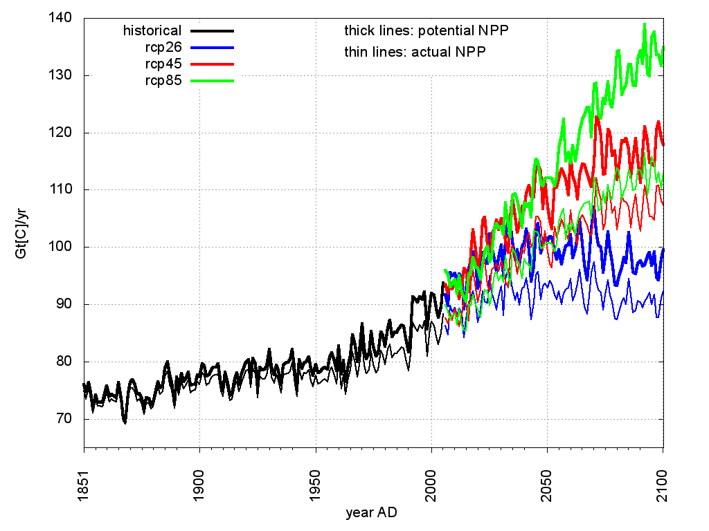

|
Data files are still available. |
| 13 February 2015 |
CMCC-CM
|
pr_3hr_*
and other 3-hourly flux files (rsds, rsdscs, ...)
NOTE: "cf3hr" files have different time coordinates than "3hr" files. This posting refers only to "3hr" files. |
The time-of-day recorded for accumulated / averaged flux
variables is erroneous. |
Data files are still available. Times can be corrected by manually subtracting 3 hours. |
{kind=link}
{kind=link}
{kind=link}
{kind=link}
{kind=link}
{kind=link}
{kind=link}
{kind=link}
{kind=link}
{kind=link}